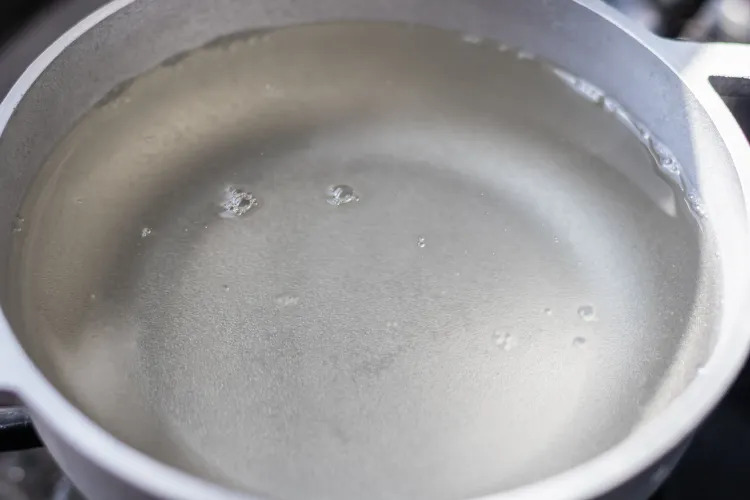
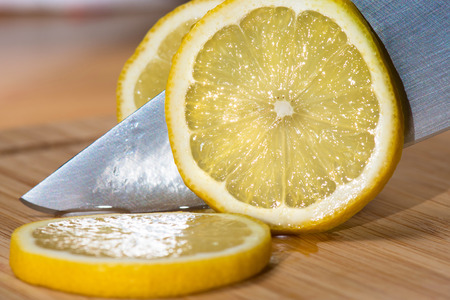
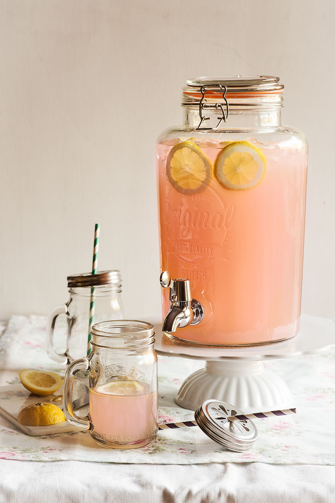

Ingredientes (para 5-6 personas)
- 400 ml de zumo de limón natural, exprimido al momento
- 150 ml de zumo de arándanos o granada, envasado
- 450 ml de agua fría
- 120 g de azúcar
- Dos cdas. de ralladura de limón
- Limones adicionales para cortar en rodajas de adorno
- Hielo al gusto

Preparación
- En un cazo vertemos la mitad del agua y añadimos el azúcar. Rallamos la corteza de los limones con un rallador hasta obtener la cantidad de la receta y la añadimos al cazo.
- Calentamos y cocemos 10 minutos a fuego suave. Retiramos este almíbar flojo del fuego y dejamos enfriar a temperatura ambiente.
- Cortamos los limones por la mitad y exprimimos para obtener la cantidad de zumo que necesitamos.
- Colamos el almíbar con un colador y desechamos la ralladura del limón.
- Vertemos el zumo de limón obtenido, el zumo de arándanos, el almíbar frío y el resto del agua en el dispensador o jarra que vayamos a utilizar. Mezclamos y ponemos unas rodajas finas de limón para adornar.
- Añadimos el hielo, esperamos unos minutos a que se enfríe la limonada, cerramos la tapa y servimos.
Galería


